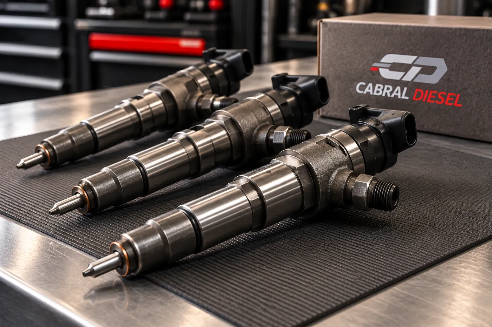
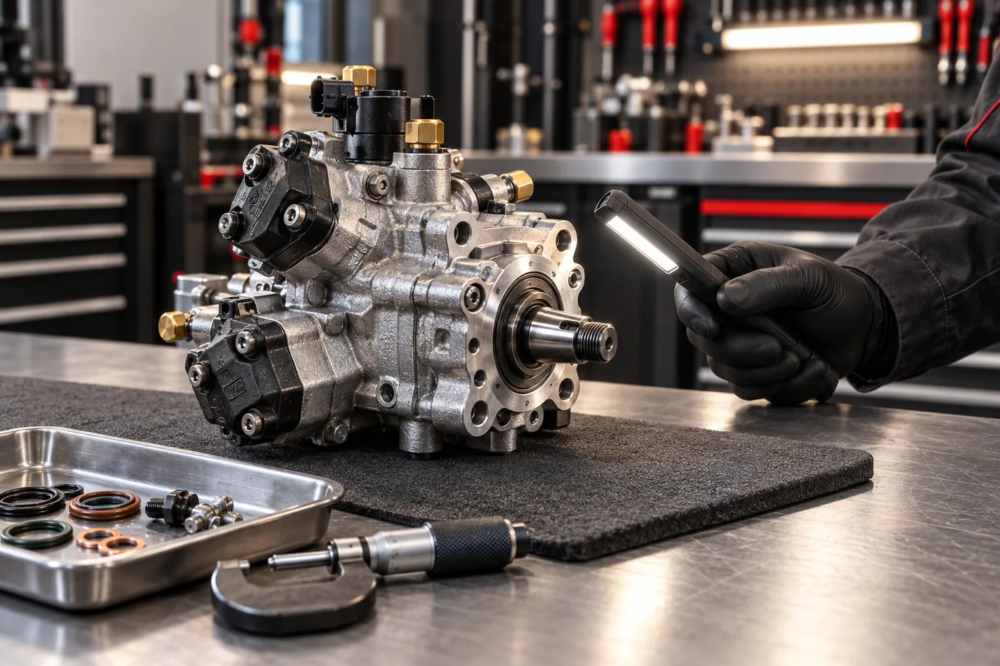

BI-01
Bicos injetores
Avaliação, recuperação e teste. Common rail e mecânicos, linha leve e pesada.
- Vazão
- Vedação
- Pulverização
Bombas e bicos injetores · Itaquaquecetuba – SP
Seu motor perdeu força? Quase sempre o problema está onde ninguém vê. A gente abre, mede e só devolve a peça depois que ela passa na bancada.
Pedir orçamentoSe reconheceu algum, mande o sintoma pelo WhatsApp. A gente diz se o problema é na injeção antes de você gastar com peça.
Mandar o sintoma
BI-01
Avaliação, recuperação e teste. Common rail e mecânicos, linha leve e pesada.

BI-02
Recuperação com controle de pressão e calibração em bancada.
Picapes · Vans e utilitários · Caminhões · Frotas · Máquinas agrícolas
A peça vai pra bancada antes de tudo. A gente mede e acha o problema.
Você recebe o que precisa ser feito e o prazo. Nada começa sem o seu ok.
Recuperada, a peça volta pra bancada. Só sai se passar.

A Cabral Diesel é uma oficina de família, com [X] anos de trabalho em injeção diesel. Atendemos mecânicos, frotistas e motoristas que não podem ficar parados.
Nosso trabalho é bomba e bico. Se a leitura da oficina ou do scanner apontar falha na injeção, traga ou envie a peça para avaliação.
Pode. Mande modelo, ano e o que está acontecendo. Uma foto ou vídeo ajuda.
Sim. Estamos em Itaquaquecetuba – SP e recebemos peças de oficinas, frotas e proprietários de todo o Brasil.
Depende da peça e do que a avaliação mostrar. Informamos o prazo junto com o orçamento.
Mande o modelo, o ano e o sintoma do veículo. Respondemos pelo WhatsApp.
Chamar no WhatsApp